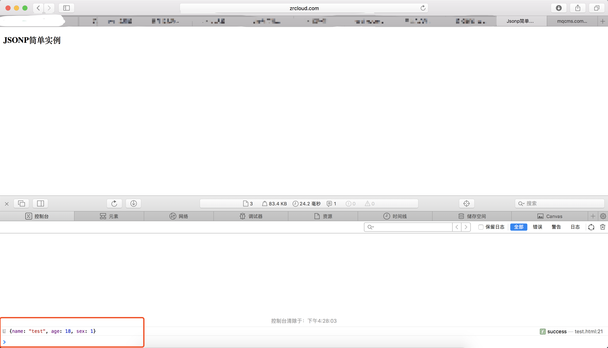

浏览器的同源策略：
同源策略(Same Origin Policy)是一种约定，它是由Netscape提出的一个著名的安全策略，它限制了从同一个源加载的文档或脚本如何与来自另一个源的资源进行交互。这是一个用于隔离潜在恶意文件的重要安全机制。
同源的定义：如果两个页面的协议，端口（如果有指定）和主机都相同，则两个页面具有相同的源。我们也可以把它称为“协议/主机/端口 tuple”，或简单地叫做“tuple". ("tuple" ，“元”，是指一些事物组合在一起形成一个整体，比如（1，2）叫二元，（1，2，3）叫三元)
如果协议、端口、主机（域名或IP地址，如果是IP地址则看做一个根域名）、子域名，当其中一个不同，则我们的请求即会发生跨域问题。
下表给出了相对http://store.company.com/dir/page.html同源检测的示例:
| URL | 结果 | 原因 |
| http://store.company.com/dir2/other.html | 同源 | |
| http://store.company.com/dir/inner/another.html | 同源 | |
| https://store.company.com/secure.html | 不同源 | 协议不同 |
| http://store.company.com:81/dir/etc.html | 不同源 | 端口不同 |
| http://news.company.com/dir/other.html | 不同源 | 主机域名不同 |
突破同源策略限制：
1、script标签的src/img标签的src，或者说link标签的href他们没有被通源策略所限制
2、src或href链接的静态资源，本质上来说也是一个get请求
JSONP是什么？和json有关系吗?
Json(JavaScript Object Notation) 是一种轻量级的数据交换格式。
JSONP是JSON with Padding的略称。它是一个非官方非正式的传输的协议，它允许在服务器端集成Script tags返回至客户端，通过javascript callback的形式实现跨域访问。
JSONP的简单实现：
html代码：（运行在本地http://zrcloud.com/test.html）
<!DOCTYPE html PUBLIC "-//W3C//DTD XHTML 1.0 Transitional//EN"
"http://www.w3.org/TR/xhtml1/DTD/xhtml1-transitional.dtd">
<html xmlns="http://www.w3.org/1999/xhtml">
<head>
<meta http-equiv="Content-Type" content="text/html; charset=UTF-8" />
<title>Jsonp简单实例</title>
<script src="http://libs.baidu.com/jquery/2.1.4/jquery.min.js"></script>
</head>
<body>
<h3>JSONP简单实例</h3>
<script type="text/javascript">
$(function() {
$.ajax({
type:'get',
async:false,//同步请求
url:'http://mqcms.com/test.php',
dataType:'jsonp',
jsonp:'callback',//传递给请求处理程序或页面的，用以获得jsonp回调函数名的参数名(一般默认为:callback)
jsonpCallback:'test',//自定义的jsonp回调函数名称，默认为jQuery自动生成的随机函数名，也可以写"?"，jQuery会自动为你处理数据
success:function(data){
console.log(data);
}
})
})
</script>
</body>
</html>
PHP服务器端代码：
<?php
header('Content-Type:application/json; charset=utf-8');
$callback =isset($_GET['callback']) ? trim($_GET['callback']) : '';
$arr=['name'=>'test','age'=>18,'sex'=>1];
echo $callback.'('.json_encode($arr).')';
?>运行结果：

注：为什么我这次没有写test这个函数呢？而且竟然也运行成功了！
这就是jQuery的功劳了，jquery在处理jsonp类型的ajax时（，虽然jquery也把jsonp归入了ajax，但其实它们真的不是一回事儿），自动帮你生成回调函数并把数据取出来供success属性方法来调用。